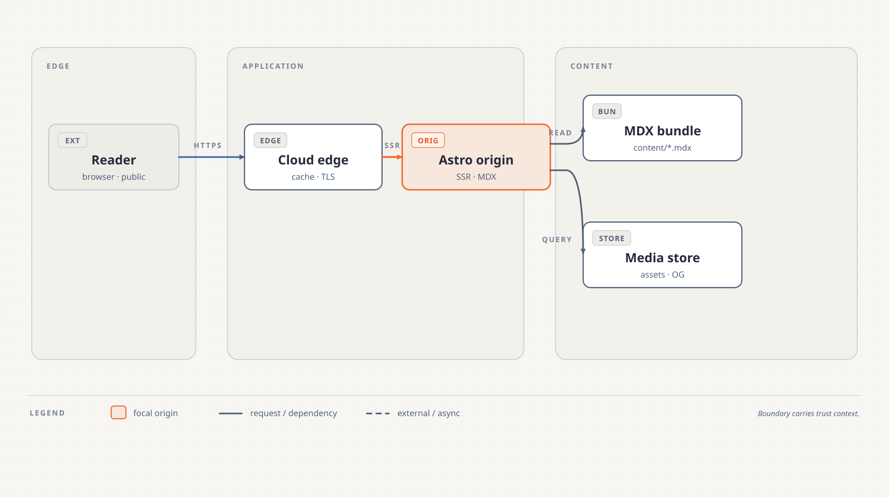
P‑18R6 · OWNER REVIEW CONTACT SHEET
Fourteen engines. Fourteen distinct silhouettes.
QA-only neutral-light anchors derived from the locked semantic contract. This labeled sheet is for owner inspection; use the masked sheet for blind recognition.
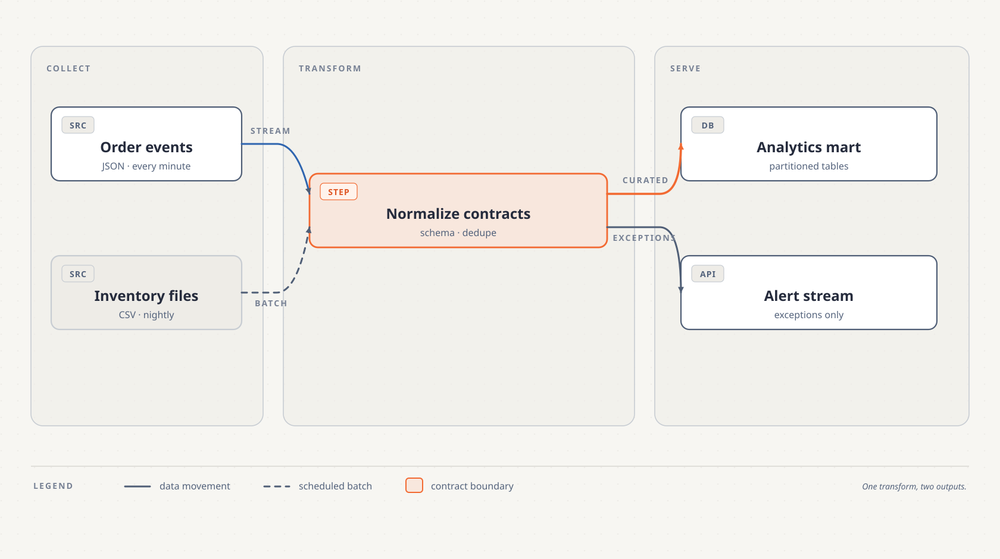
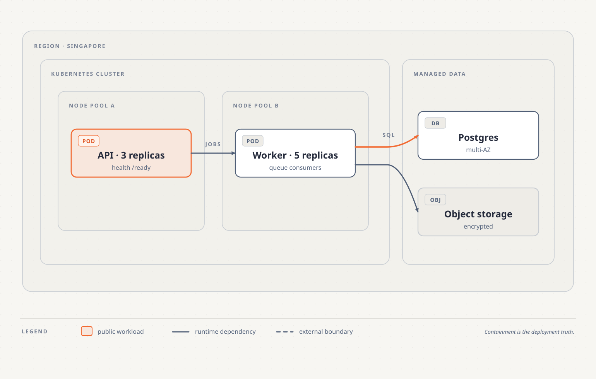
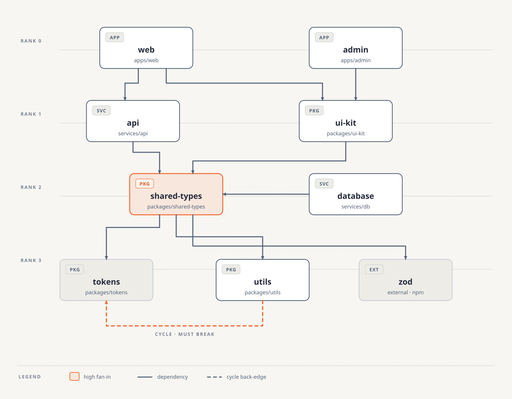
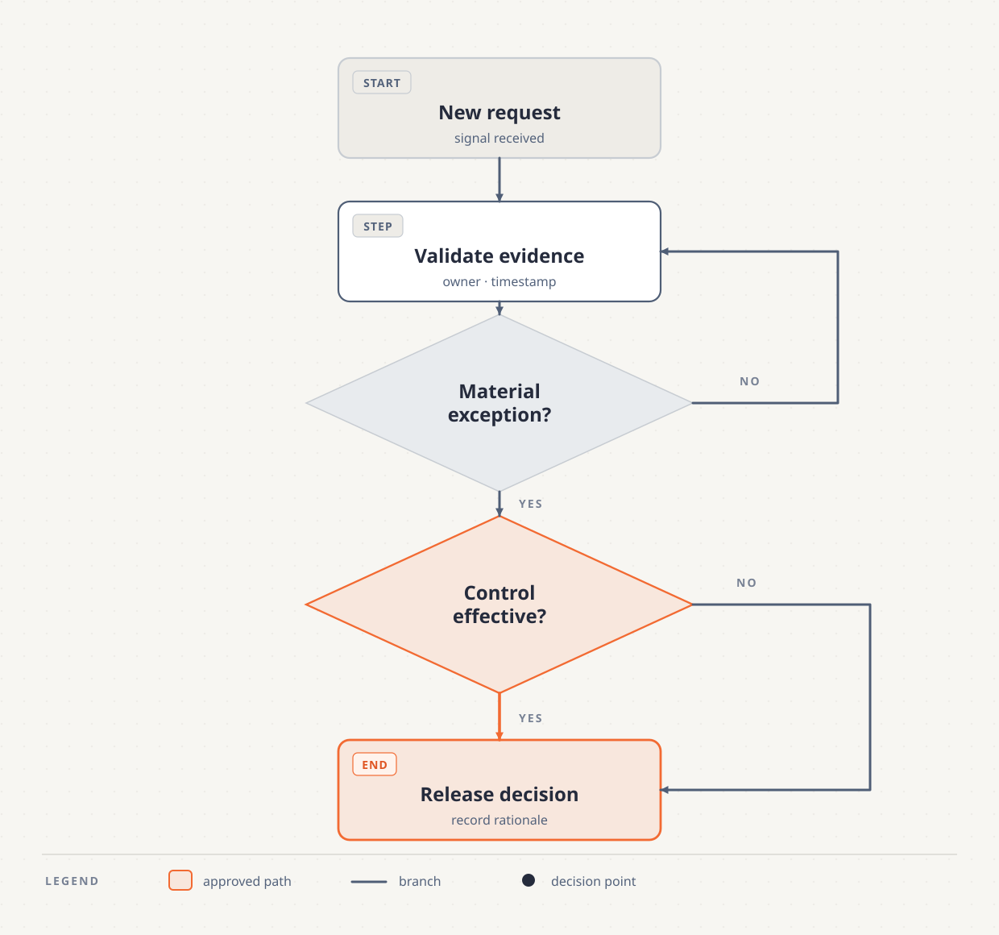
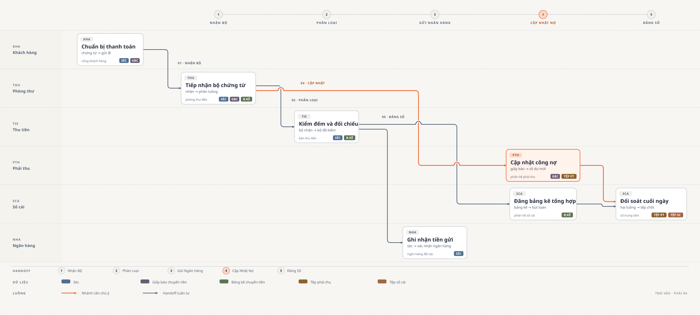
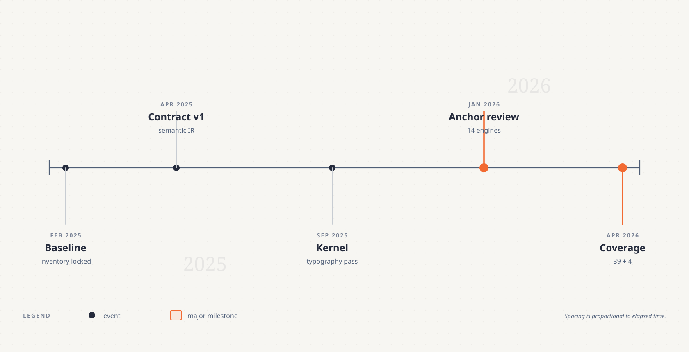
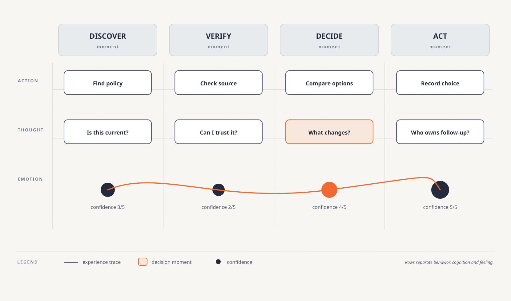
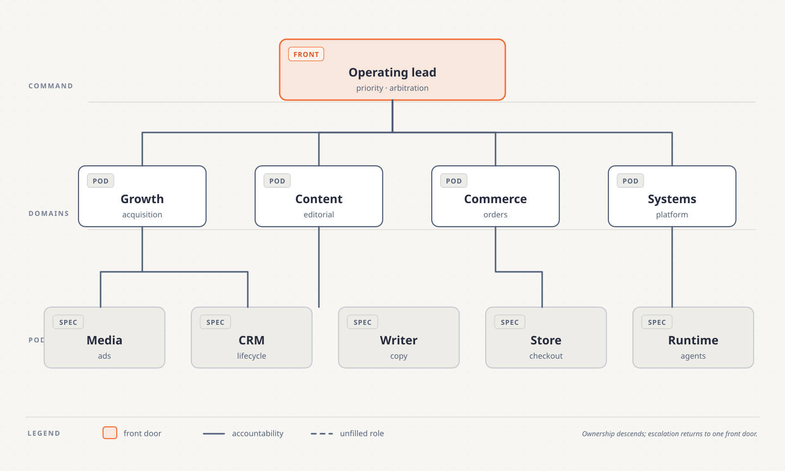
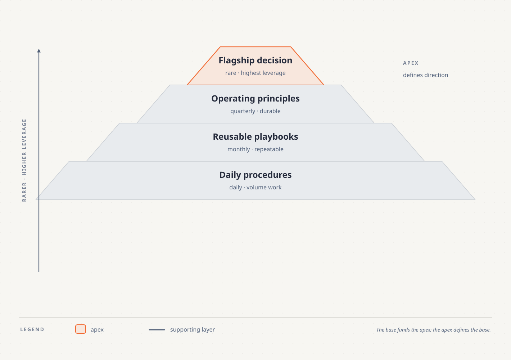
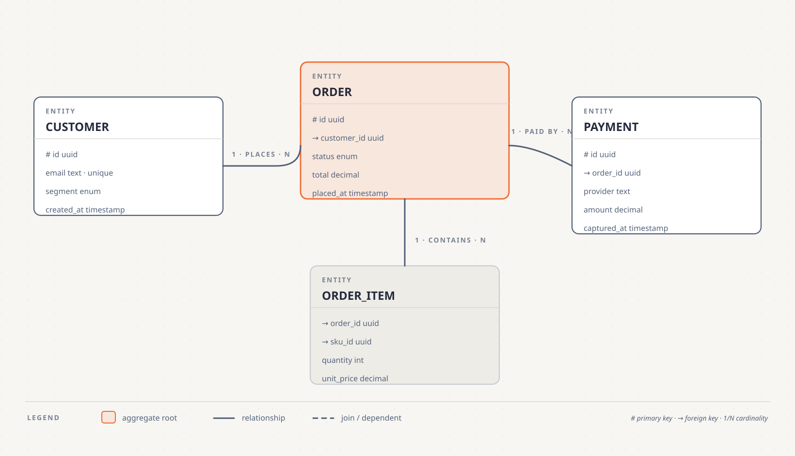
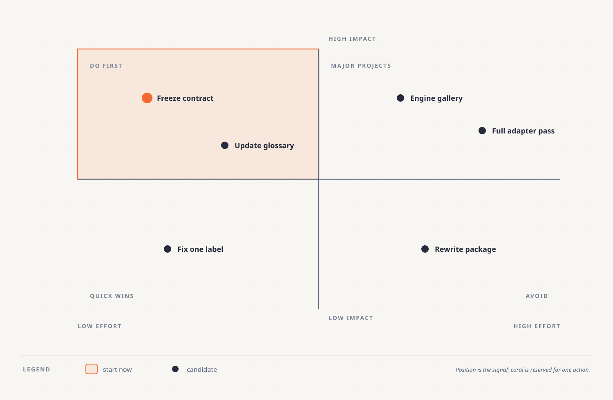
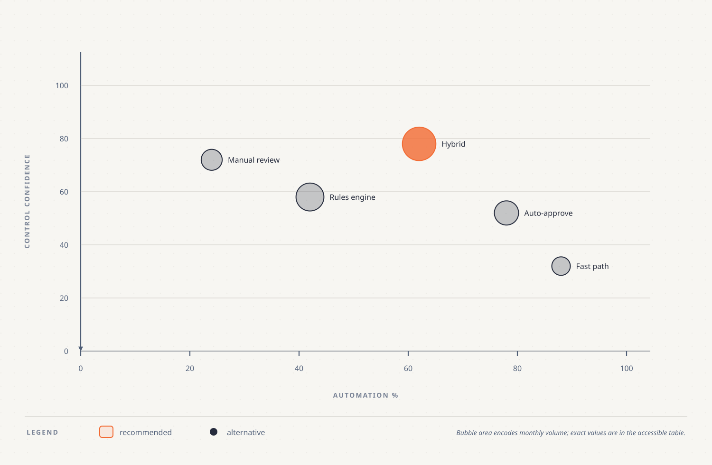
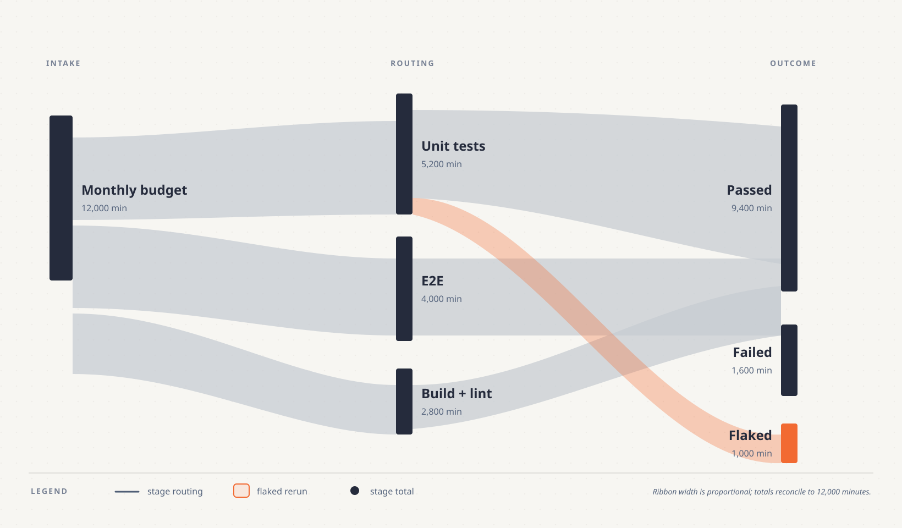